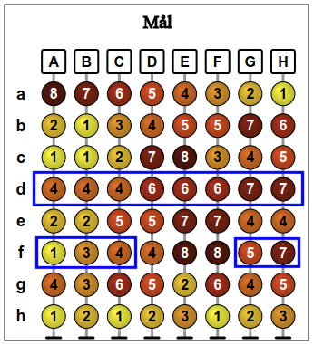

När man klickar på en "sortera"-knapp ändras ordningen på kolumnerna. På raden för den klickade knappen placeras de små bollarna till vänster om de större. På raden för den klickade knappen placeras bollarna i storleksordning från de minsta till vänster till de största till höger. På raden för den klickade knappen placeras bollarna i stigande ordning från vänster enligt siffrorna på dem. Utöver detta ändras kolumnernas läge så lite som möjligt.
Du ska sortera kolumnerna i den ordning som visas i Mål-bilden till höger genom att klicka på knapparna.
För att få poäng måste sorteringen ske i bara tre steg.
Vi utnyttjar tipset att man bara ska titta på bollarna i Mål-bilden.
Den sista sorteringen placerar de små bollarna till vänster om de stora och måste alltså ha skett för rad c, e, eller f. Anta t.ex. att c är den sista sorteringen.
På så sätt har kolumn D hamnat längst till höger. I de två tidigare stegen måste kolumn A, B, och C ha hamnat rätt. Man kan t.ex. försäkra sig att kolumn A hamnar till vänster genom att i näst sista steget sortera rad e.
För att få kolumn B till vänster om kolumn C kan man sortera rad f.
Lösningen erhålla alltså genom att man sorterar rad f, e, c (i den ordningen).
Det finns många andra lösningar, t.ex. b, f, e, eller d, c, f, eller e, c, f, etc...
Vi utnyttjar tipset att man bara ska titta på bollarna i Mål-bilden.
Den sista sorteringen placerar de små bollarna till vänster om de stora och måste alltså ha skett för rad c eller rad e. Anta t.ex. att c är den sista sorteringen.
På så sätt hamnar kolumn A korrekt längst till vänster. I de två tidigare stegen måste dels kolumn B ha hamnat till vänster om kolumn C, och dels även kolumnerna D, E och F i rätt ordning.
För att få B till vänster om C finns det bara ett sätt, att sortera rad a i steg ett eller två.
Återstår att få kolumnerna D, E och F i rätt ordning. Rad e är den enda som kan lägga kolumn D till vänster om kolumn E. Detta måste man göra efter sorteringen av rad a som lagt E och F i rätt ordning.
En lösning är alltså att sortera raderna a, e, c (i den ordningen).
Det finns en ytterligare lösning. Om man väljer att sluta med rad e finner man med liknande resonemang som ovan lösningen a, c, e.
Vi utnyttjar tipset att man bara ska titta på bollarna i Mål-bilden.
Den sista sorteringen ordnar bollarna i nummerordning, och måste alltså ha skett för rad d.
Denna sortering av rad d ger tre grupper av kolumner : un grupp till vänster bildad av A, B och C, en grupp i mitten bildad av D, E och F, och en grupp till höger bildad av kolunerna G och H. Ordningen inom grupperna måste dock ha skapats i tidigare steg.
Man kan få kolumnerna A, B och C i rätt ordning i ett steg, genom att sortera rad f. Denna sortering placerar också kolumnerna G och H i rätt ordning.
Återstår alltså att sortera gruppen i mitten, kolumnerna D, E och F. Sorteingen av rad f placerar D till vänster om E och F, som man vill ha det. Däremot måste man ytterligare hitta ett sätt att placera E till vänster om F. Om man ser på siffrorna i kolumn E och F ser man att bara en sortering av rad g placerar E till vänster om F.
Lösningen är alltså att sortera raderna g, f, d (i den ordningen).